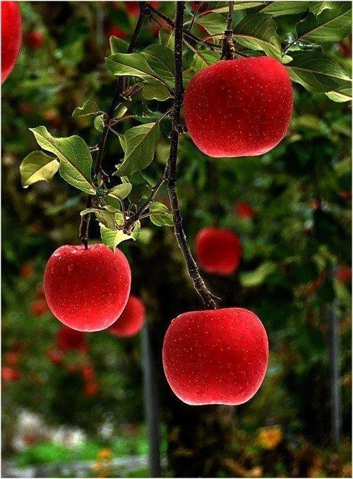

水果的黑洞

我不如何走近你, 真的爱已让我失去方向. 的确我已迷失. 好像秋天的蜜橘, 喜欢那酸甜的感觉, 欢乐伴随惆怅. 你天使般的笑容, 可以俊美春天的桃花. 以及冬日的雪莲.
我只想轻吻 你泛着红晕的面庞 露珠挂在脸上 像还未来临的悲伤 我只想拥抱 你依然孤傲的模样 秋叶飘过凝望 像终会散逸的芳香
樱桃是阿西罗拉樱桃的中文名称。原产于热带美洲西印度群岛加勒比海地区，因此又叫西印度樱桃。适合在雨量充沛、日照充足、温度适宜的热带及亚热带地区生长，以富含维生素C而闻名于世，是世界公认的“天然VC之王”和“生命之果”。

草莓营养价值丰富，被誉为是“水果皇后”，含有丰富的维生素C、维生素A、维生素E、维生素PP、维生素B1、维生素B2、胡萝卜素、鞣酸、天冬氨酸、铜、草莓胺、果胶、纤维素、叶酸、铁、钙、鞣花酸与花青素等营养物质。
蛋糕是甜蜜的,蛋糕是快乐的,蛋糕也是幸福的,不同的蛋糕,代表着不同的心情和意义
水果蛋糕:草莓裁剪着夏的彩衣,青苹遗落了秋的召唤,在群果相拥的园中荡漾着
我知道 爱情是一种味道 辟如香梨亦或西瓜汁 或是微酸或是甜蜜是近乎融化的滋润
水果这种普通的产品，在平淡了千年之后，也迎来了一些创新变革，但这种带有正能量的水果，能否被人们所接受，需要市场的验证,“果真可以”做这样的创意文化水果，是希望让水果有新的文化价值。
水果的艺术，创意中的水果比艺术品更加美丽
菜花间蝶也飞来
又趁暖风双去
杏梢红韭嫩泉香
是老瓦盆边饮处